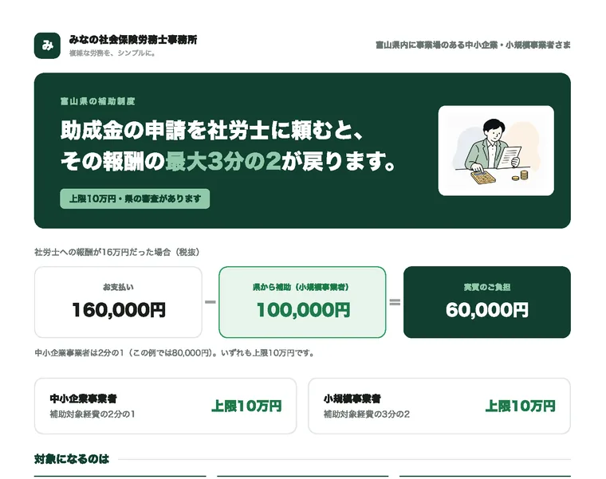
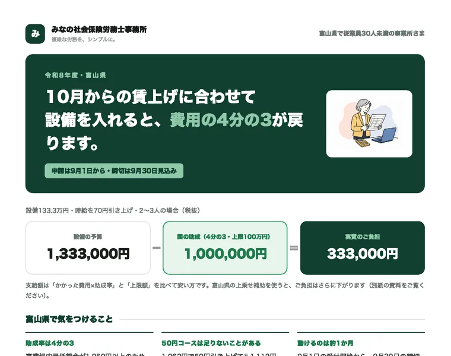
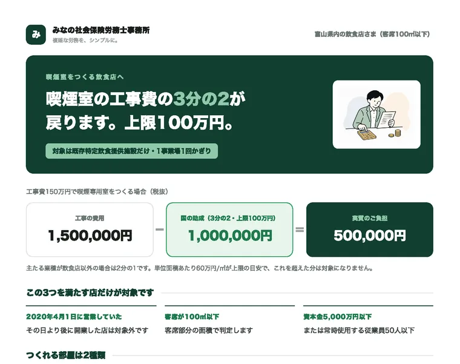
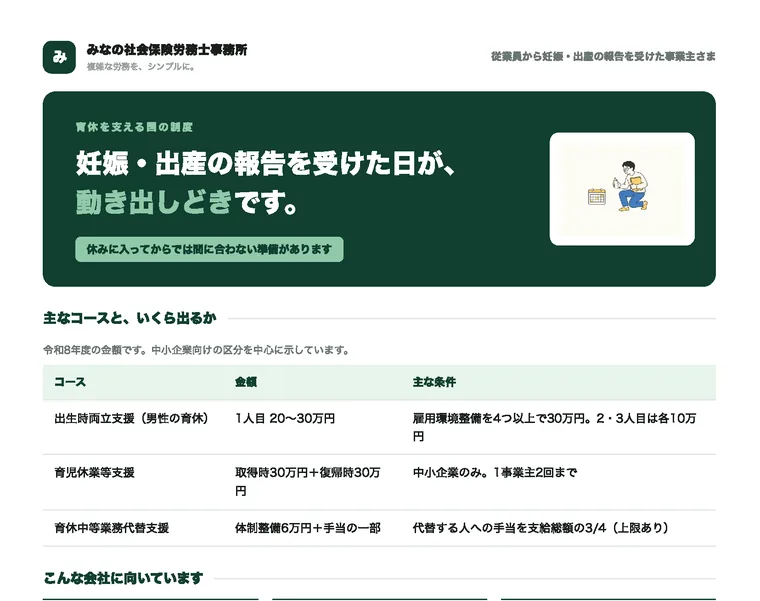

制度ごとに要点をまとめたPDFです。登録は不要で、そのまま保存・印刷いただけます。くわしい要件や様式は、各資料のWeb版に載せています。
助成金・補助金の資料です。登録は不要で、そのまま保存できます。
国の助成金の申請を社労士に頼んだとき、その報酬の最大3分の2が補助されます。

10月からの賃上げに合わせて設備を入れると、その費用の4分の3が国から助成されます。

喫煙室をつくる飲食店へ。工事費の3分の2、上限100万円が国から助成されます。

育休の取得と職場復帰を支える制度。妊娠・出産の報告を受けた日が動き出しどきです。

資料には、根拠を確認した日を入れています。助成金や補助金は年度や政策で変わります。カードに出している日付は、その資料の内容を公式の資料で確認した日です。申請の前には、必ず最新の要領をお確かめください。対象になるかどうかのご相談は無料でお受けしています。